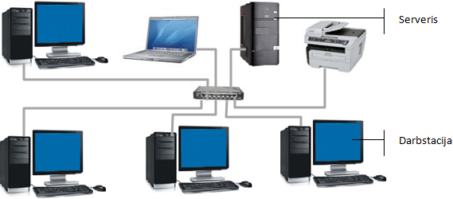
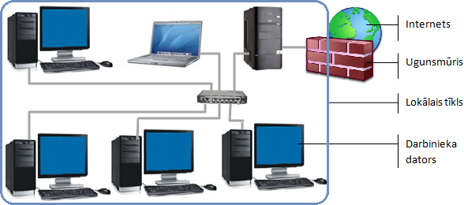

Datortīkli
Datortīkls (network) jeb tīkls ir datoru un ar tiem saistīto ierīču grupa, kas savstarpēji savienotas ar sakaru kanāliem un kas nodrošina datņu un citu resursu kopīgas izmantošanas iespējas (resource sharing) vairākiem lietotājiem.
Koplietošanas resursu izmantošanas un priekšrocību piemēri:
- Koplietojamas datnes, kas samazina nepieciešamību tās dublēt vairākos datoros un atbrīvo no to versiju pārvaldības;
- Vienlaicīga datu lietošana, piemēram, datu bāzēs;
- Koplietojama programmatūra, ko iespējams lietot tieši no servera, nevis instalēt katrā datorā;
- Koplietojama aparatūra, kas samazina kopējās tās izmaksas, piemēram, tīklā var lietot vienu printeri vai skeneri;
- Lietotājs vajadzīgajiem resursiem var piekļūt no jebkura tīkla datora.
Lokālais tīkls (LAN)
Lokālais tīkls (Local Area Network – LAN) ir datoru tīkls, kas izvietots nelielā teritorijā un atrodas lietotāja pārziņā. Lokālais tīkls sastāv no sakaru līnijām, kas savieno personālos datorus un citas elektroniskās koplietošanas iekārtas, piemēram, printerus un datu glabāšanas ierīces.
Lai savienotu lokālā tīkla datorus, visbiežāk izmanto vadus un centrmezglu (hub) vai komutatoru (switch), kas izpilda dažādu ierīču kopīga savienojuma punkta funkcijas.

Kā lokālā tīkla piemēru var minēt skolas datortīklu.
Teritoriālais tīkls (WAN)
Teritoriālais tīkls (Wide Area Network – WAN) ir datoru tīkls, kas savieno attālus lietotājus, kuri var atrasties citās pilsētās vai valstīs un kuri parasti izmanto vispārējās lietošanas vai speciālus sakaru līdzekļus.
Teritoriālajā datortīklā parasti ietilpst daudzi lokālie tīkli vai to grupas. Kā šāda tīkla piemēru var minēt intertīklu jeb internetu (internet).

Bezvadu tīkls
Bezvadu (wireless) tīkls ir jebkura veida datortīkls, kas nodrošina datu apmaiņu starp datoriem bez vadu palīdzības.

Klientserveris
Parasti uzņēmumos datoros tiek glabāta informācija, kurai nepieciešams piekļūt vairākiem darbiniekiem, tāpēc tajos mēdz izmantot klienta-servera modeļus.
Serveris (server) ir programma, kas var atrasties vienā vai vairākos datoros un kas sniedz pakalpojumus jeb servisus datortīklā
Klients (client) ir lietotne vai dators, kas šos servisus izmanto. Klienta datoru mēdz saukt arī par darbstaciju (worksation).

Serveris var nodrošināt klientiem dažādus koplietošanas pakalpojumus (servisus), piemēram:
Pieeju koplietošanas datnēm (datņu serveris);
Izdruku veikšanu uz tīkla printera (drukas serveris);
sakaru servisus, piemēram, e-pasta (e-pasta serveris), un piekļuvi internetam (komunikāciju serveris).
Servera funkcijas var pildīt arī kāda no darbstacijām, piemēram, drukas servera.
Servera un klienta datori var atrasties vienā telpā vai arī ļoti tālu viens no otra, piemēram, globālā tīmekļa serveris un interneta lietotāja dators (klients).
Internets un tā galvenie izmantošanas veidi
Tīkls Internet jeb internets (Internet) ir pasaules lielākais datortīkls, kas sastāv no miljoniem privāto, valsts, akadēmisko un uzņēmumu tīkliem. Atsevišķu tīklu mijiedarbība tiek īstenota, izmantojot protokolu TCP/IP.
Internets piedāvā plašu informācijas resursu un pakalpojumu (servisu) klāstu, no kuriem populārākie ir:
Globālais tīmeklis (World Wide Web – WWW), kas ir savstarpēji saistītu hiperteksta dokumentu sistēma, kurai var piekļūt caur internetu. Ar pārlūkprogrammu, izmantojot hipersaites tīmekļa lappusēs, var skatīt tekstu, attēlus un video;
Elektroniskais pasts (Electronic Mail – e-mail), kas ir elektronisku ziņojumu pārsūtīšanas metode datoru tīklos. Ziņojumi var saturēt ne tikai tekstu, bet arī pievienotas dažāda tipa datnes, piemēram, dokumentus vai attēlus.
Iekštīkls un ārtīkls
Tā kā globālā tīmekļa lietošana ir ļoti populāra un daudziem datora lietotājiem pazīstama, tā tehnoloģiju plaši izmanto uzņēmumu un institūciju tīklu veidošanā.
Kā globālā tīmekļa tehnoloģiju izmantošanas priekšrocības vēl var minēt:
Pieejama dažāda programmatūra ar zemām izmaksām;
Var izmantot dažāda tipa datoros ar atšķirīgām operētājsistēmām un pārlūkprogrammām;
Globālā tīmekļa dokumentiem ir līdzīgs izskats un to vienkārša lietošana.
Iekštīkls
Iekštīkls (intranet) ir privāts datortīkls, kurā izmanto publiskā interneta un globālā tīmekļa datu pārraides standartus (TCP/IP protokolu) un kurš pieder vienam uzņēmumam vai organizācijai.
No nesankcionētas piekļuves iekštīklu var aizsargāt ar ugunsmūri.

Ārtīkls
Ārtīkls (extranet) ir tāds iekštīkls, kurā ir realizēta ierobežota autorizēta piekļuve arī citiem lietotājiem. Ārējais lietotājs var izmantot ārtīklu tikai tad, ja viņam ir spēkā esošs lietotājvārds un parole. Lietotāja identitāte nosaka, kādiem ārtīkla resursiem viņam ir atļauta piekļuve. Ārtīkli kļūst arvien populārāki informācijas apmaiņā starp darījumu partneriem, piemēram, klientiem un piegādātājiem.

Vairāk informācijas var atrast šeit
Uz Internets